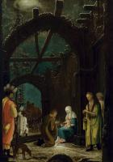
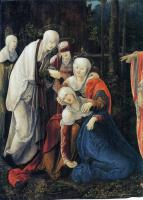

index
/
English
Wolf Huber
(1490 - 1553)

The Adoration of the Magi
1520
Adoration to Child

Christ taking Leave of his Mother
1520-25
Passion of the Christ
The Lamentation of Christ
1524
Lamentation over Christ
The Flight into Egypt
1525-30
Flight into Egypt
Allegory of Salvation
1543
Crucifixion
The Capture of Christ
Passion of the Christ
English
|
Русский
|
Українська